Ce qui change dans NextGate
Dix fonctions nouvelles ou modifiées, expliquées pas à pas. Sur chaque capture, les repères numérotés correspondent aux étapes : survolez une étape pour voir où cliquer.
Van de départ d'une tournée
Choisir le van au moment de créer la tournée. La fiche du livreur suit.
Distribution › Tournées 02 · PilotageIndicateurs de performance
Taux de visite, de réussite, de réalisation et de livraison, par vendeur.
Rapports & Analyses › Statistiques Livreurs 03 · PilotageChiffre d'affaires par vendeur
Le CA de chaque vendeur, mois par mois, avec le total de l'année.
Rapports & Analyses › Statistiques Livreurs 04 · StockInventaire
Feuille de comptage à imprimer, saisie en masse et export Excel.
Gestion de stock › Inventaire 05 · TerrainModifier une commande
Le prévendeur ou le livreur corrige la commande quand le client change d'avis.
Application mobile 06 · StockQuantités en cartons
Saisir et lire les quantités en cartons + unités, sur le web et sur le téléphone.
Web et application mobile 07 · TerrainStock disponible pour les prévendeurs
Voir le stock du dépôt sur le téléphone avant de prendre la commande.
Application mobile 08 · PilotageObjectifs vendeurs
Deux objectifs par vendeur et par mois, un par gamme, suivis en taux de réussite.
Rapports & Analyses › Objectifs vendeurs 09 · CaisseÉtat des livreurs
Savoir si chaque livreur est net ou présente un écart de caisse, avec le détail.
Distribution › État des livreurs 10 · SécuritéBénéfices protégés par PIN
Le tableau des bénéfices est réservé à l'administrateur et s'ouvre avec un code PIN.
Rapports & Analyses › Rapport des BénéficesChoisir le van de départ d'une tournée
Cliquez sur Distribution pour ouvrir la liste, puis sur Tournées. Le bouton Nouvelle Tournée est en haut à droite de la page.
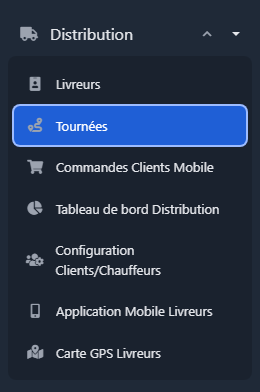
Chaque tournée part d'un van. Vous le choisissez dans le formulaire de la tournée, et il est reporté sur la fiche du livreur.
- Cliquez sur Nouvelle Tournée, ou sur le bouton Modifier d'une tournée existante.
- Choisissez le livreur.
- Ouvrez Entrepôt de départ et choisissez le van.
- Seuls les vans actifs sont proposés : les entrepôts dont le code contient « van ».
- Si vous laissez le champ vide, la tournée prend le van inscrit sur la fiche du livreur.
- Enregistrez.
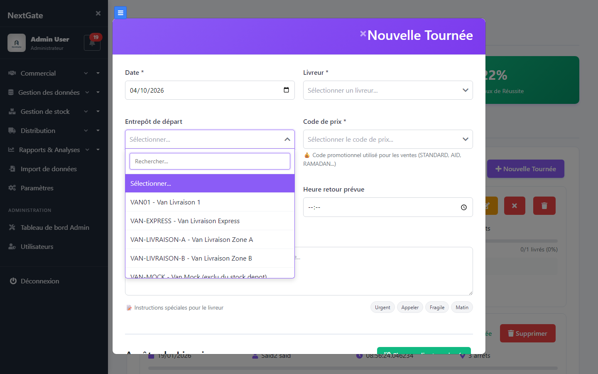
Ce qui se passe ensuite
- Si la tournée est planifiée ou en cours, le van choisi est inscrit sur la fiche du livreur. Sa prochaine tournée sera pré-remplie avec ce van.
- Modifier une tournée terminée ou clôturée ne change pas le van actuel du livreur.
- En modification, laisser le champ vide ne supprime pas le van déjà enregistré.
- Pour vérifier, cliquez sur Voir les détails : la ligne Entrepôt de départ affiche le code et le nom du van.
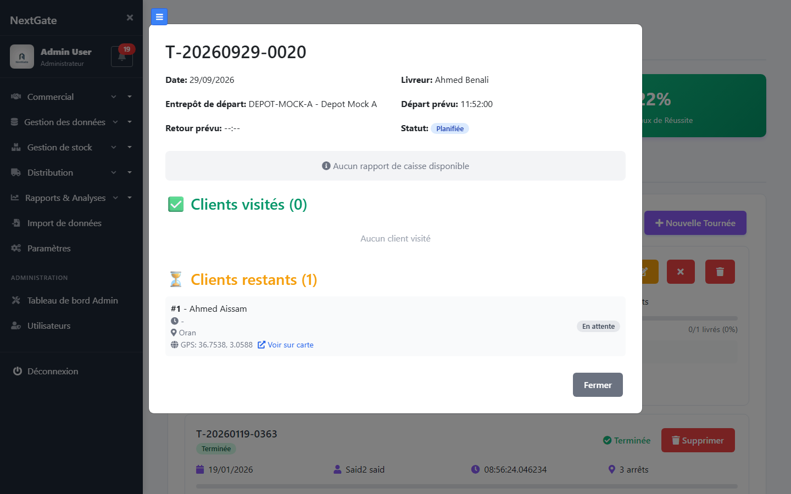
Indicateurs de performance des vendeurs
Dans la page, descendez sous les filtres de date : le bloc Indicateurs de performance est le premier tableau.
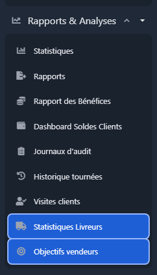
Le bloc Indicateurs de performance suit les filtres du haut de la page : la période (par défaut le mois en cours) et le livreur. Les quatre tuiles donnent le total de l'équipe ; le tableau donne le détail par vendeur.
| Indicateur | Calcul | Bon à savoir |
|---|---|---|
| Taux de visite | clients planifiés visitésclients planifiés | Un client est planifié s'il figure au planning hebdomadaire du jour ou dans un arrêt de la tournée du jour. Les jours à venir ne comptent pas. |
| Taux de réussite | visites avec vente ou commandevisites effectuées | Un client vu deux fois le même jour compte pour une seule visite. |
| Taux de réalisation | CA réaliséobjectifs mensuels | Affiche « Aucun objectif défini » tant qu'aucun objectif n'est saisi pour le vendeur. |
| Livraison commandes | montant des commandes livréesmontant des commandes prises | Calculé en montant, pas en nombre de commandes. |
- Lisez d'abord les tuiles : le résultat de toute l'équipe, avec le détail du calcul sous chaque taux.
- Descendez dans le tableau pour comparer les vendeurs. La couleur de la pastille indique le niveau : rouge faible, orange moyen, vert bon.
- En bas du bloc, un rappel donne la formule de chaque taux. Elle s'affiche aussi au survol des en-têtes de colonne.
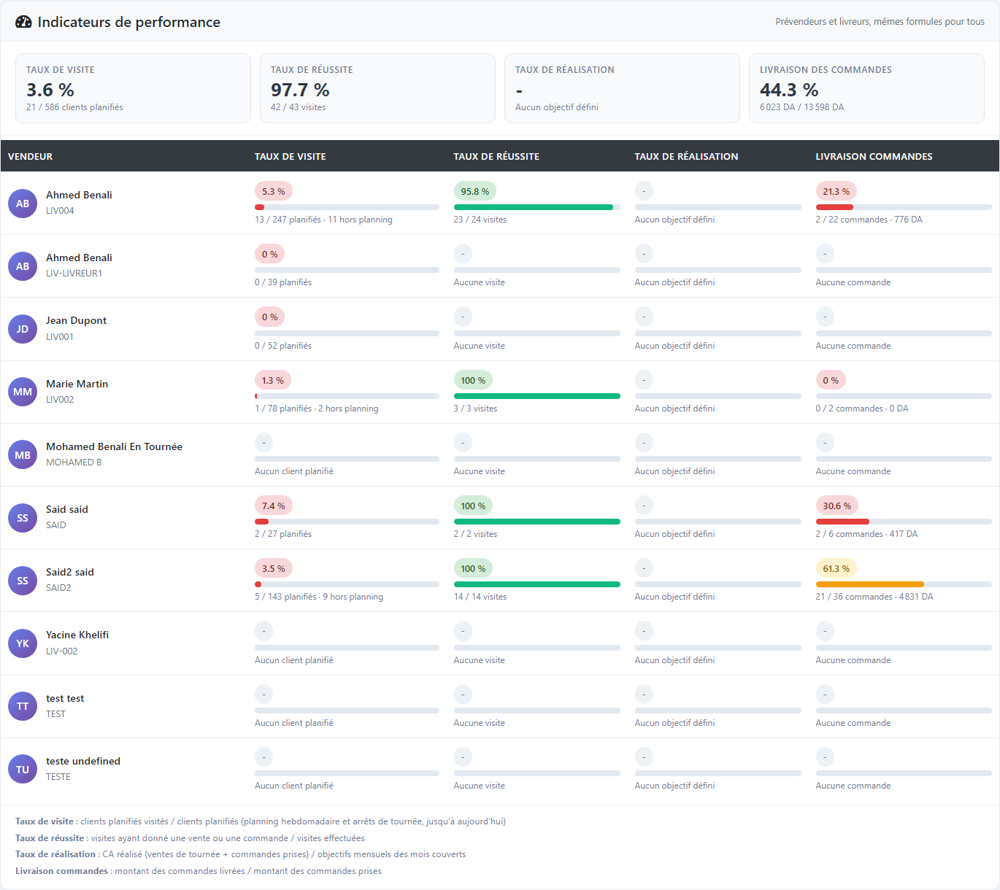
- Un prévendeur et un livreur sont mesurés avec les mêmes règles.
- Un tiret « - » signifie que le taux ne peut pas être calculé : rien de planifié, aucune visite ou aucune commande.
- La période choisie ne peut pas dépasser deux ans.
Chiffre d'affaires par vendeur, mois par mois
Même page que le chapitre 02 : le bloc Chiffre d'affaires par vendeur se trouve juste sous les indicateurs.
- Choisissez l'année. Ce tableau couvre toujours l'année entière : il ignore les dates du haut de la page, mais suit le filtre livreur.
- Choisissez ce que vous voulez voir : Total (ventes de tournée et commandes), Ventes de tournée seulement, ou Commandes seulement (sans les commandes annulées).
- Lisez les tuiles : CA du mois en cours, part des ventes, part des commandes et cumul de l'année.
- Dans le tableau, une ligne par vendeur et une colonne par mois, puis le Total. Le mois en cours est surligné ; survolez une cellule pour voir le détail ventes et commandes.
- Cliquez sur Exporter pour télécharger le tableau.
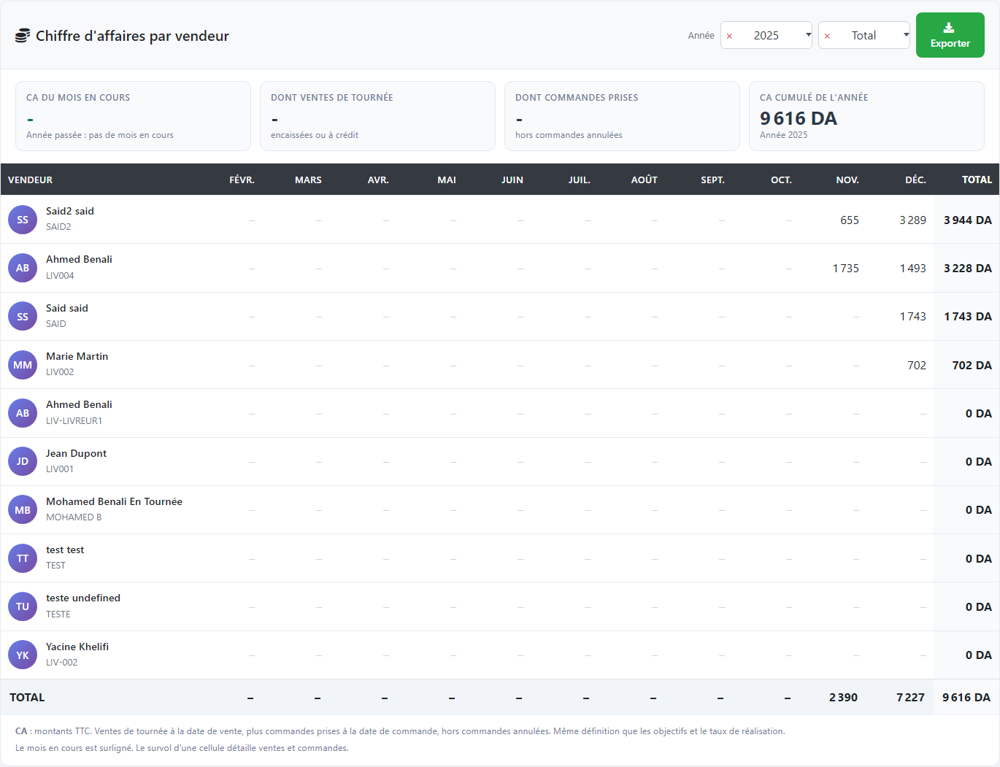
Inventaire : compter sur papier, saisir en une fois
La page s'ouvre sur l'onglet Mes Sessions. Les boutons Feuille de comptage, Saisie en masse et Exporter apparaissent après avoir ouvert une session.
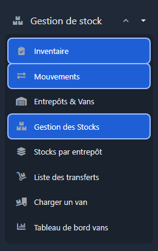
Le comptage se fait en trois temps : imprimer la feuille, compter dans le dépôt, puis ressaisir la feuille en une seule fois. Les numéros de ligne sont les mêmes sur la feuille et à l'écran.
- Dans Mes Sessions, cliquez sur Ouvrir à côté d'une session en brouillon ou en cours. Les onglets Comptage et Détails demandent une session ouverte ; sinon un message vous l'indique.
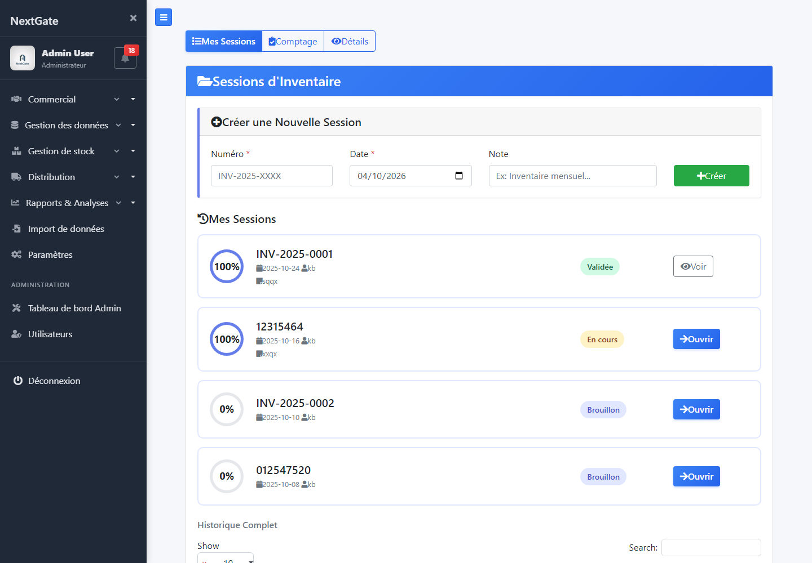
- Une fois la session ouverte, trois nouveaux boutons apparaissent : Feuille de comptage, Saisie en masse et Exporter.
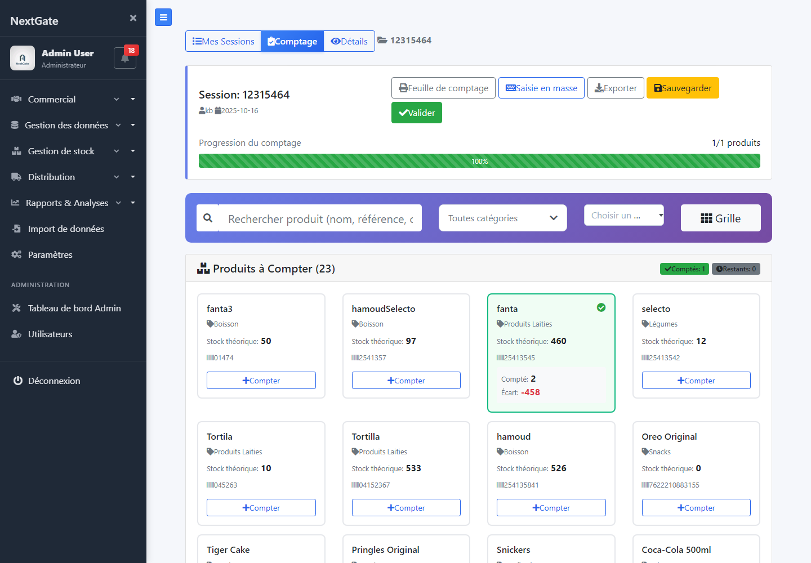
Imprimer la feuille de comptage
- Cliquez sur Feuille de comptage. La feuille A4 s'ouvre dans un nouvel onglet.
- Cliquez sur Imprimer, ou faites Ctrl + P. Restants uniquement n'affiche que les produits pas encore comptés.
- Dans le dépôt, notez pour chaque produit les cartons et les unités. Écrivez 0 si le produit est absent.
- Les produits déjà saisis apparaissent en gris avec la mention (déjà saisi).
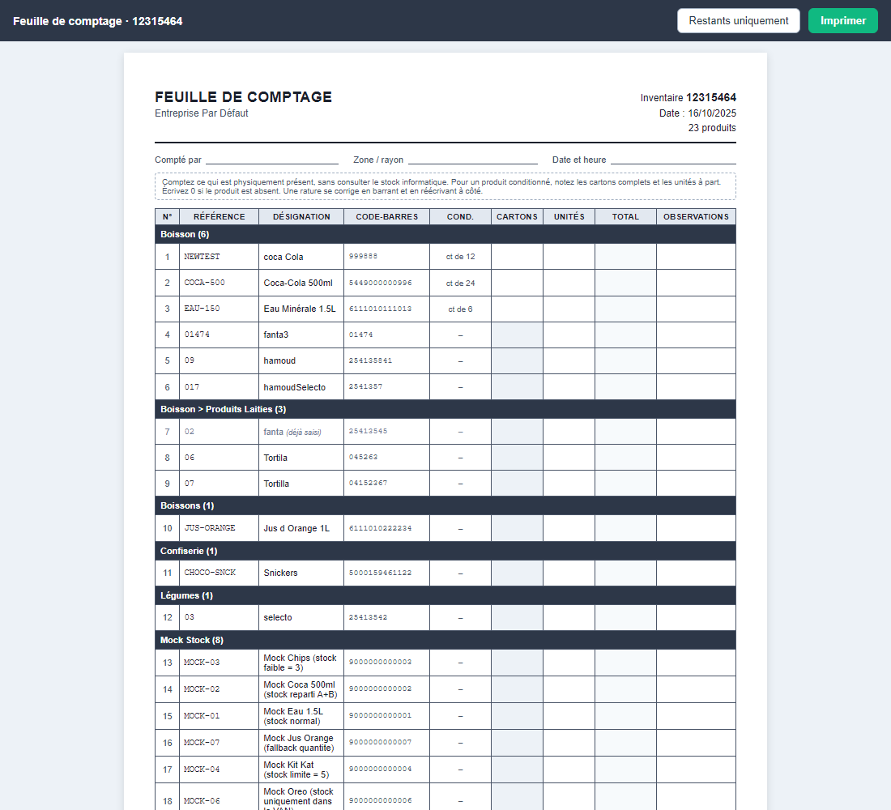
Ressaisir la feuille : saisie en masse
- Cliquez sur Saisie en masse. Filtrez si besoin par Catégorie, par Afficher (tous ou restants) ou avec Rechercher (N°, référence, désignation, code-barres).
- Repérez la ligne par son N° : c'est le même que sur la feuille papier.
- Tapez la quantité dans Quantité comptée, ou remplissez Cartons + unités pour que le total soit calculé. Entrée passe à la ligne suivante.
- Suivez la colonne État pour voir où en est chaque ligne.
- Cliquez sur Enregistrer la saisie. Toutes les lignes partent en une fois ; les lignes en erreur restent affichées pour être corrigées.
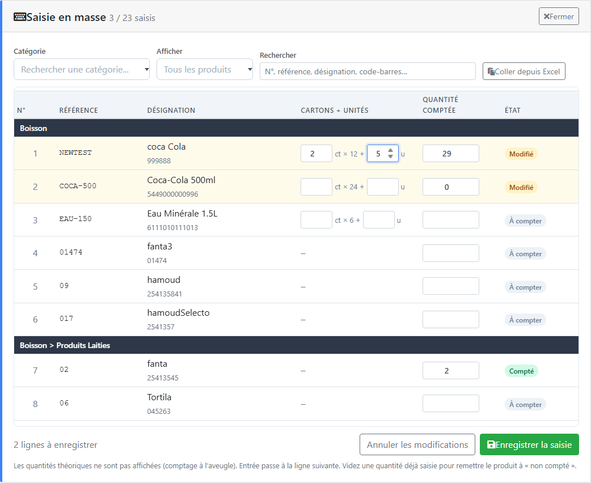
Coller depuis Excel
- Cliquez sur Coller depuis Excel.
- Collez deux colonnes : la référence (ou le code-barres, ou le N° de ligne), puis la quantité. Séparateurs acceptés : tabulation,
;ou,. - Cliquez sur Remplir le tableau, vérifiez les lignes, puis Enregistrer la saisie.
NEWTEST 24 COCA-500 0 6111010111013;12
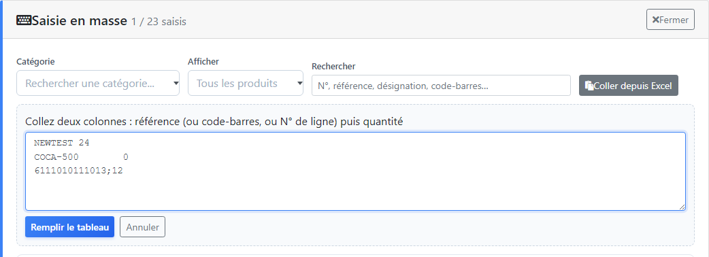
La session en Excel
Cliquez sur Exporter. Le fichier inventaire_<numéro>.xlsx donne, pour chaque produit, la quantité théorique, la quantité comptée et l'écart. Tant que la session est ouverte, tous les produits sont listés.
Valider l'inventaire
Si des produits ne sont pas comptés, la validation est refusée et le message donne le nombre et la liste des produits manquants. La validation est appliquée en entier ou pas du tout : jamais d'ajustement de stock à moitié.
Modifier une commande directement sur le bon
Sur l'écran Accueil de l'application, descendez jusqu'aux Actions rapides : Commandes à livrer et Historique sont en bas de la liste. Le bouton Modifier la commande est en haut du bon de commande.
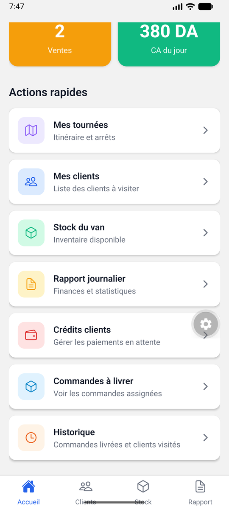
Le client change d'avis devant vous : il ajoute un produit, en retire un ou change une quantité. Vous ouvrez le bon de commande sur le téléphone, vous le corrigez, et la modification part au serveur à la prochaine synchronisation. Le prévendeur et le livreur ont chacun leur bouton Modifier la commande.
Prévendeur : depuis le bon de commande
- Ouvrez Historique, onglet Tournées, puis Voir tous les détails sur la tournée du jour.
- Touchez le client, puis Voir tous les produits sous la commande : le bon s'ouvre.
- Appuyez sur Modifier la commande, en haut du bon. Le bouton n'apparaît que si la tournée est en cours et que la commande n'est ni livrée, ni annulée, ni entièrement payée. Sinon, un message avec un cadenas en donne la raison, par exemple « Cette commande est déjà livrée ».
- Changez les quantités (en unités ou en cartons), supprimez une ligne avec la corbeille ou ajoutez un produit. Les montants sont affichés TTC, comme sur le bon, et le total se met à jour.
- Appuyez sur Modifier commande, en bas, pour enregistrer ; ou sur Annuler pour tout laisser comme avant.
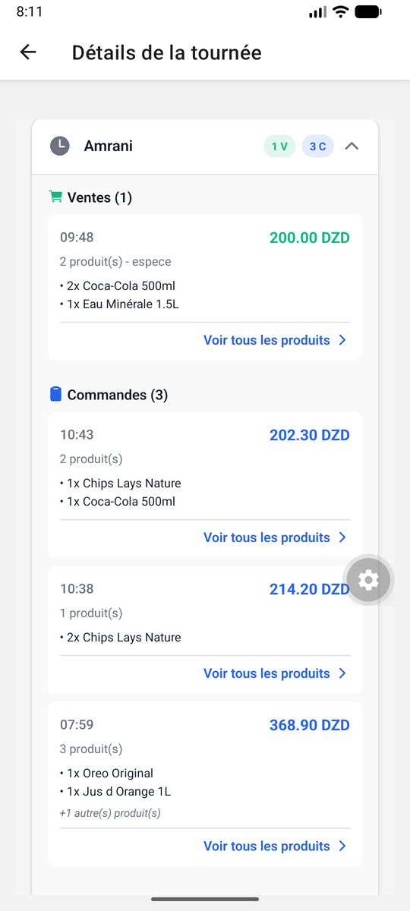
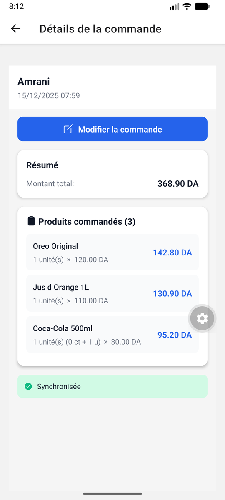
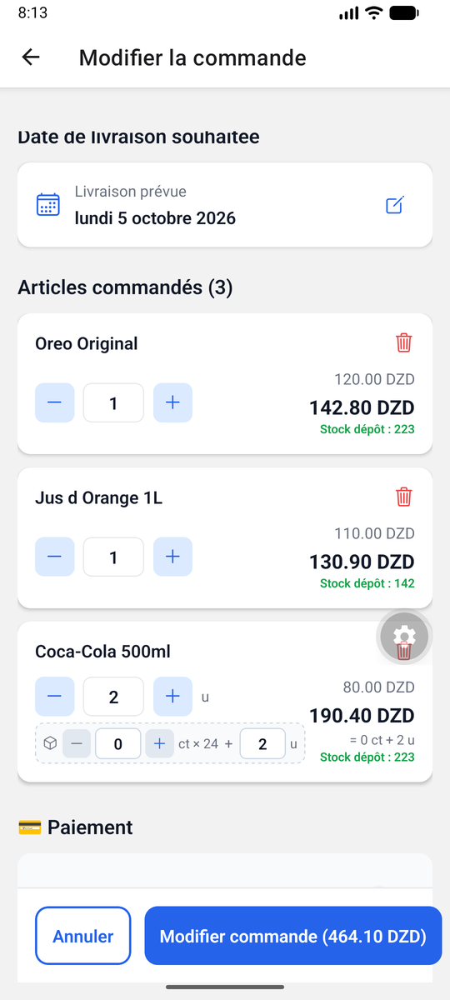
Livreur : depuis Commandes à livrer
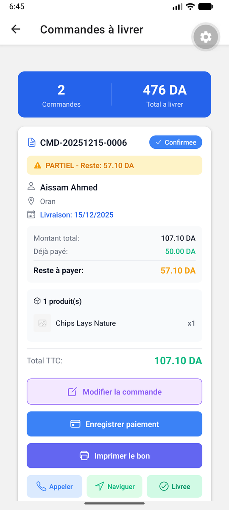
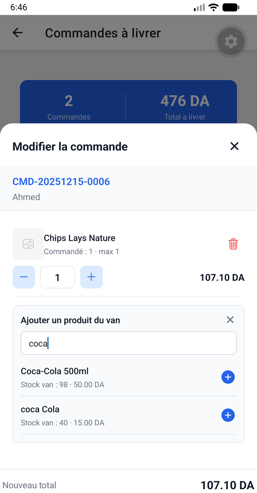
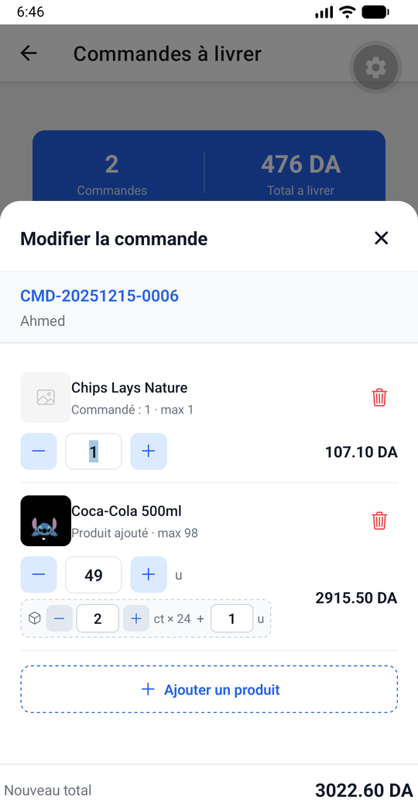
Depuis le bon de commande
- Ouvrez le bon : Historique › Tournées › Voir tous les détails › le client › Voir tous les produits.
- Appuyez sur Modifier la commande. Le bouton n'apparaît que si la tournée est en cours.
- Changez les produits ou les quantités, puis appuyez sur Modifier commande.
Si vous modifiez plusieurs fois avant la synchronisation, seule la dernière version est envoyée.
Depuis Commandes à livrer
- Ouvrez Commandes à livrer, puis la commande.
- Appuyez sur Modifier la commande. Changez les quantités, retirez une ligne ou utilisez Ajouter un produit pour prendre un produit du van.
- Vérifiez le Nouveau total, appuyez sur Enregistrer, puis livrez normalement.
La modification est envoyée avant la livraison.
Le trajet d'une modification
Acceptée
La commande est à jour sur le serveur. Chaque modification est tracée dans la commande : auteur, date et changements.
Refusée
Un bandeau rouge s'affiche sur la commande avec le motif. La modification n'est pas renvoyée en boucle : corrigez la commande ou voyez avec l'administrateur.
Les règles
Saisir et lire les quantités en cartons
Le réglage se fait une fois par produit dans Produits. Ensuite, l'aide en cartons apparaît toute seule sur les écrans de saisie.
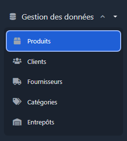
Partout où vous tapez une quantité, vous pouvez la saisir en cartons + unités. Le logiciel convertit tout seul en unités : le stock reste compté en unités, le carton sert à saisir et à lire plus vite.
Indiquer le nombre d'unités par carton
- Ouvrez Gestion des données › Produits et cliquez sur Modifier à côté du produit.
- Remplissez Unités par carton (par exemple 24), puis cliquez sur Modifier le produit. Laissez vide si le produit ne se gère pas en carton.
- Cartons par colis est facultatif.
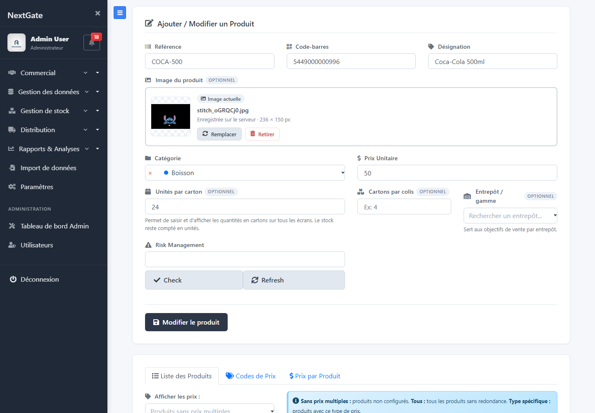
Saisir en cartons sur le web
Dès qu'un produit a un carton, une petite ligne cartons × N u + unités apparaît sous le champ Quantité. Tapez l'un ou l'autre : les deux restent synchronisés.
- Choisissez le produit.
- Tapez les cartons et les unités sous la quantité.
- Le total en unités s'affiche (= 51 u) et remplit le champ Quantité.
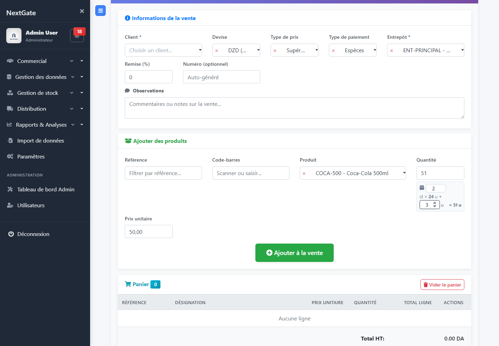
La même aide existe sur les écrans Vente, Caisse, Mouvements (transfert, perte, échantillon, retour fournisseur), Charger un van, Nouvel ajustement de stock, Commandes clients et Inventaire.
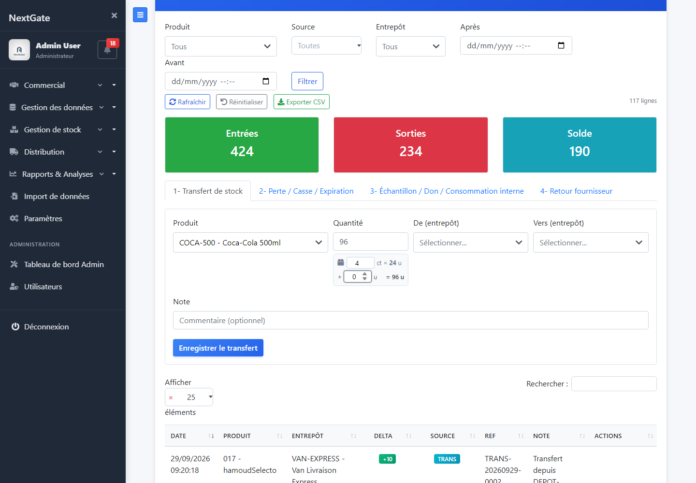
Lire le stock en cartons
Sous chaque quantité en stock, l'équivalent en cartons s'affiche : 50 pièces = 2 ct + 2 u. Sur la feuille de comptage d'inventaire, la colonne Cond. indique « ct de 24 » et les colonnes Cartons et Unités sont prêtes à remplir (chapitre 04).
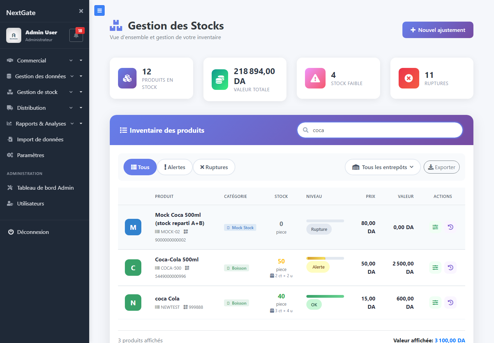
Sur le téléphone
L'application suit les mêmes règles. Sur chaque ligne du panier ou de la commande, une ligne cartons × 24 + unités s'ajoute sous le compteur d'unités.
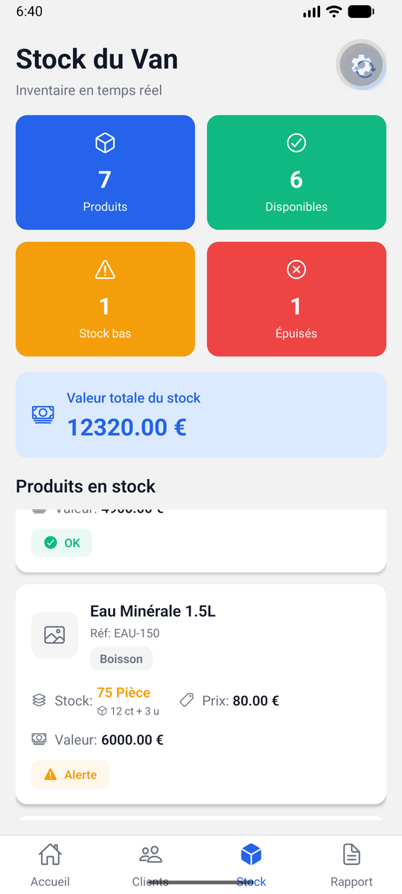
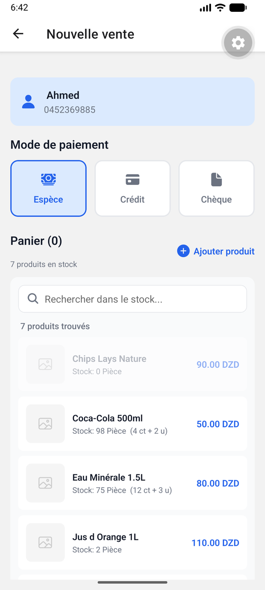
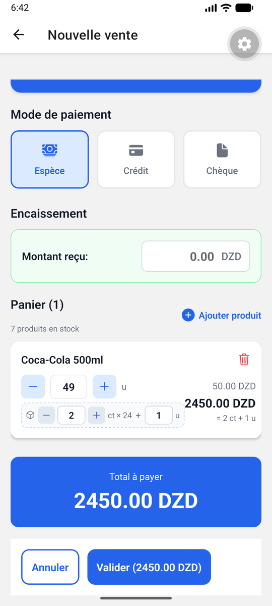
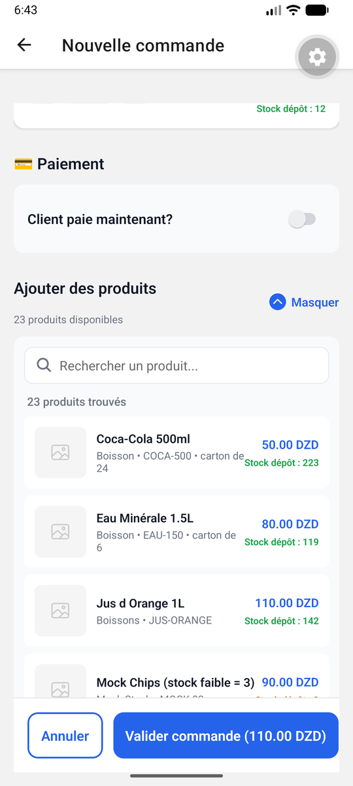
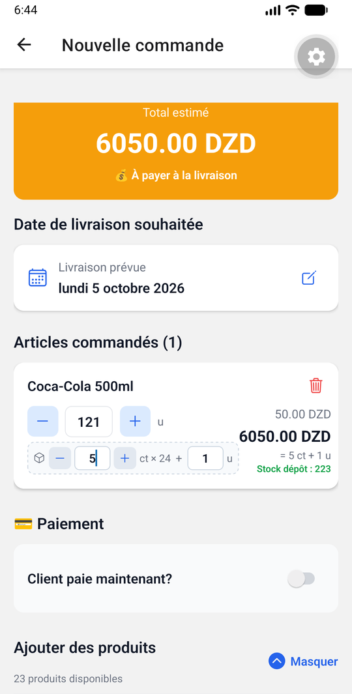
Vérifier le stock avant de prendre une commande
Dans l'onglet Clients (en bas de l'écran), chaque client a un bouton bleu Cmd pour prendre une commande.
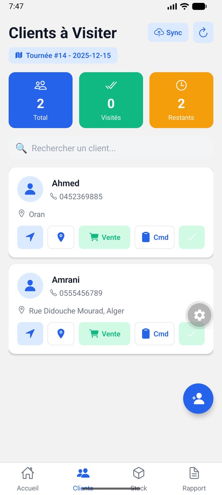
Le prévendeur voit sur son téléphone la quantité disponible au dépôt pour chaque produit. Il sait tout de suite s'il peut promettre la marchandise au client, sans appeler le magasin.
- Dans Clients, appuyez sur Cmd à côté du client.
- Sous Ajouter des produits, appuyez sur Afficher. Chaque produit indique son Stock dépôt.
- Ajoutez les produits et réglez les quantités : l'app vous empêche de dépasser le stock disponible.
| Affichage | Signification | Ce que fait l'app |
|---|---|---|
| Stock dépôt : 119 | Plus de 5 unités disponibles | Commande libre jusqu'à ce stock |
| Stock dépôt : 3 | 5 unités ou moins : stock faible | Prévenez le client que la quantité est limitée |
| Rupture de stock | Plus rien au dépôt | Produit grisé ; l'ajout est refusé avec un message |
| Stock inconnu | Produit pas encore synchronisé | Pas de limite ; synchronisez pour l'obtenir |
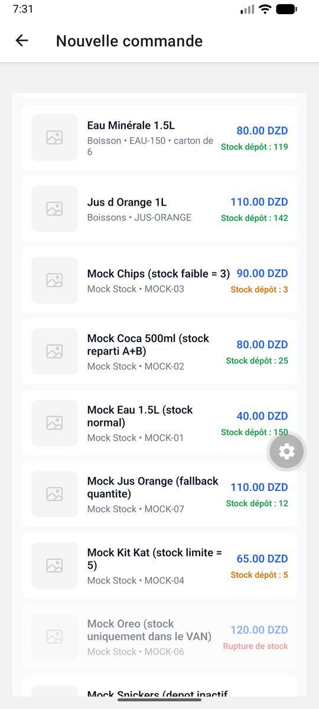
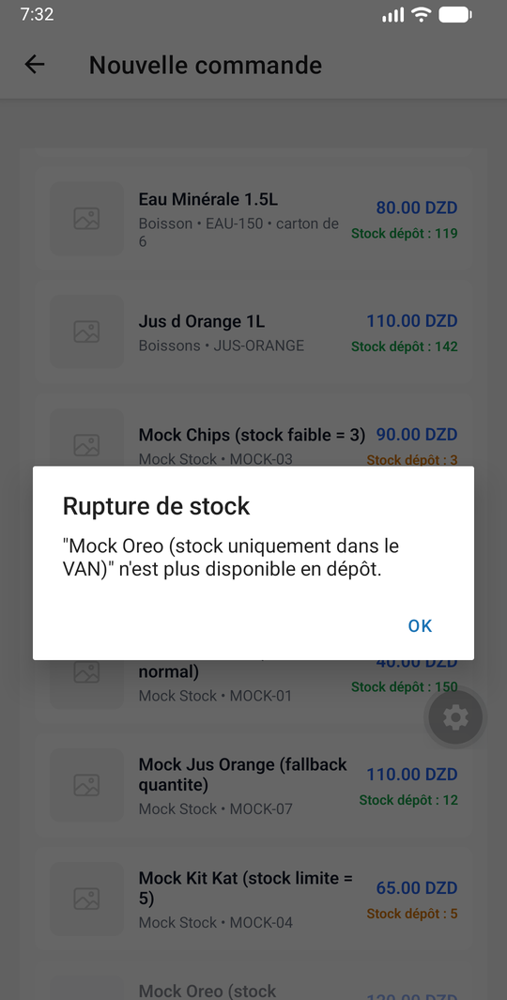
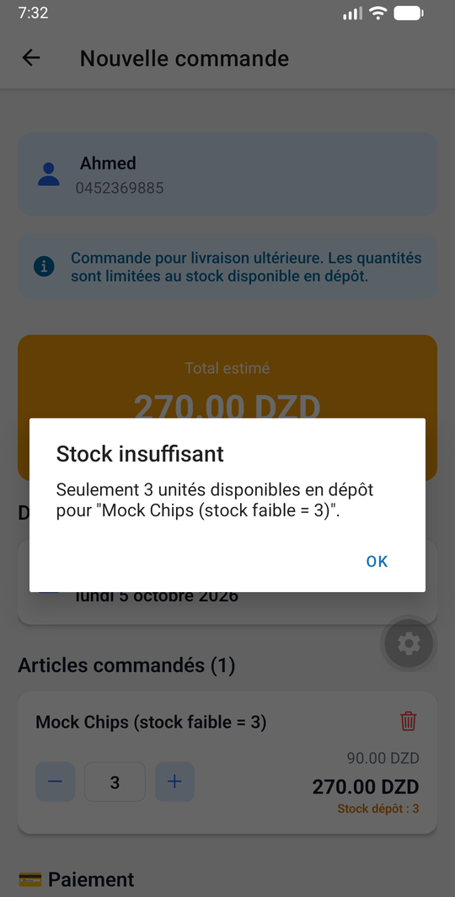
D'où vient ce stock
- C'est le stock de tous les entrepôts actifs, hors vans : la marchandise que le dépôt peut encore préparer pour une livraison.
- Il est mis à jour à chaque synchronisation (automatique toutes les 2 minutes, ou bouton Sync). Sans réseau, l'app affiche le dernier stock connu.
- Les produits gérés en cartons affichent aussi « carton de 24 » : voir le chapitre 06.
Fixer et suivre les objectifs des vendeurs
C'est la dernière entrée du menu Rapports & Analyses.
Chaque entrepôt correspond à une gamme de produits. Vous fixez donc à chaque vendeur un objectif de chiffre d'affaires par gamme et par mois, en général deux, et l'écran calcule son taux de réussite en continu.
Avant de commencer : rattacher les produits à leur gamme
Un objectif « par entrepôt » compte le CA des produits rattachés à cet entrepôt. Sur chaque fiche produit, remplissez le champ Entrepôt / gamme (visible sur la capture du chapitre 06, à droite des cartons). Un produit sans gamme ne compte dans aucun objectif d'entrepôt.
Définir un objectif
- En haut, choisissez le mois et l'année : l'objectif porte sur cette période.
- Dans Définir un objectif, choisissez le vendeur.
- Laissez Périmètre sur « Entrepôt / gamme » et choisissez l'entrepôt. (« Type de produit » permet aussi un objectif par catégorie.)
- Tapez le montant de l'Objectif CA (TTC), puis cliquez sur Enregistrer.
- Recommencez pour la deuxième gamme. Un vendeur ne peut avoir qu'un seul objectif par entrepôt et par mois.
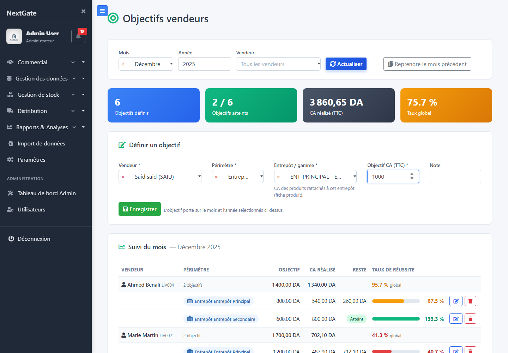
Suivre les résultats
- Les tuiles résument le mois : objectifs définis, objectifs atteints, CA réalisé et taux global.
- Le tableau Suivi du mois regroupe les objectifs par vendeur, avec son taux global sur ses deux gammes.
- Pour chaque gamme : objectif, CA réalisé, reste à faire et barre de progression. Le badge Atteint apparaît à 100 %.
- Les boutons à droite servent à modifier ou supprimer un objectif.
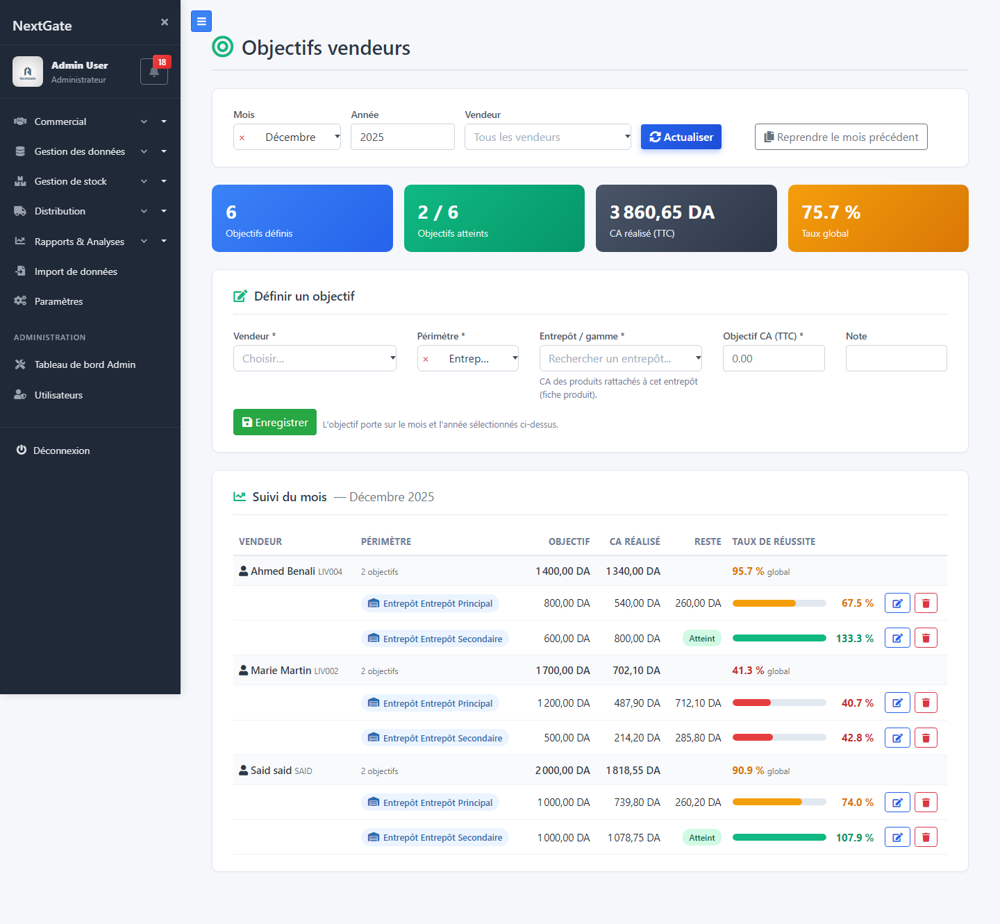
Ce qui compte dans le CA réalisé
- Les ventes de tournée du vendeur et les commandes qu'il a prises (hors commandes annulées), en TTC, sur le mois de l'objectif.
- Seuls les produits de la gamme de l'objectif sont comptés.
- Livrer une commande ne crée pas de vente : rien n'est compté deux fois.
- Les mêmes chiffres alimentent le taux de réalisation du chapitre 02.
Suivre l'état des livreurs : net ou écart
C'est la troisième entrée du menu Distribution, juste sous Tournées.
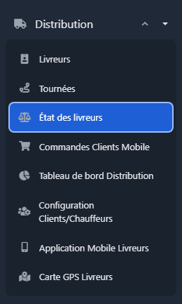
À la fin de chaque tournée, le livreur rend l'argent et un rapport de caisse est validé. Cet écran compare, pour chaque livreur, l'argent rapporté à l'argent attendu, et dit en un coup d'œil s'il est net ou s'il présente un écart.
| État | Signification | Que faire |
|---|---|---|
| Net | Sur toutes ses tournées terminées, l'argent rapporté correspond à l'argent attendu, à 10 DA près. | Rien. |
| Écart | Au moins une tournée avec un manquant (rapporté < attendu) ou un excédent (rapporté > attendu). | Ouvrez le détail, lisez la justification, régularisez avec le livreur. |
| À contrôler | Une tournée terminée n'a pas de rapport de caisse, ou son rapport n'est pas encore validé. | Faites saisir et valider le rapport de caisse. |
| Aucune tournée | Pas de tournée terminée sur la période. | Masqué par défaut ; cochez « Afficher les livreurs sans tournée ». |
- Choisissez la période : dates Du / Au, ou les raccourcis 7 jours, 30 jours, Ce mois. Par défaut : les 30 derniers jours.
- Lisez les tuiles : nombre de livreurs en écart, à contrôler et nets, et le manquant total. Cliquez sur une tuile pour n'afficher que ces livreurs.
- Dans le tableau, chaque livreur a son état, son manquant, son excédent et son écart net (rouge : il manque de l'argent ; bleu : il y en a trop). Les livreurs en écart sont en haut.
- Cliquez sur Voir le détail pour ouvrir le détail de ses tournées.
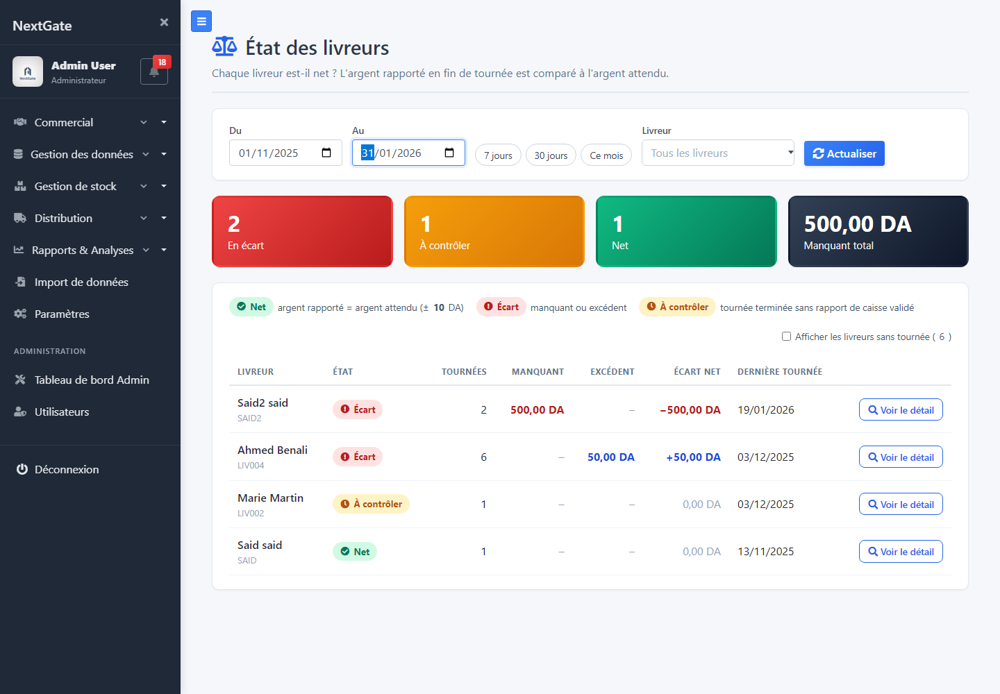
Lire le détail d'un écart
- Une ligne par tournée, la plus récente en haut : fonds de départ + espèces − dépenses = attendu, puis ce qui a été rapporté et l'écart.
- Sous la tournée : qui a validé le rapport, la justification saisie pour l'écart et les billets rendus.
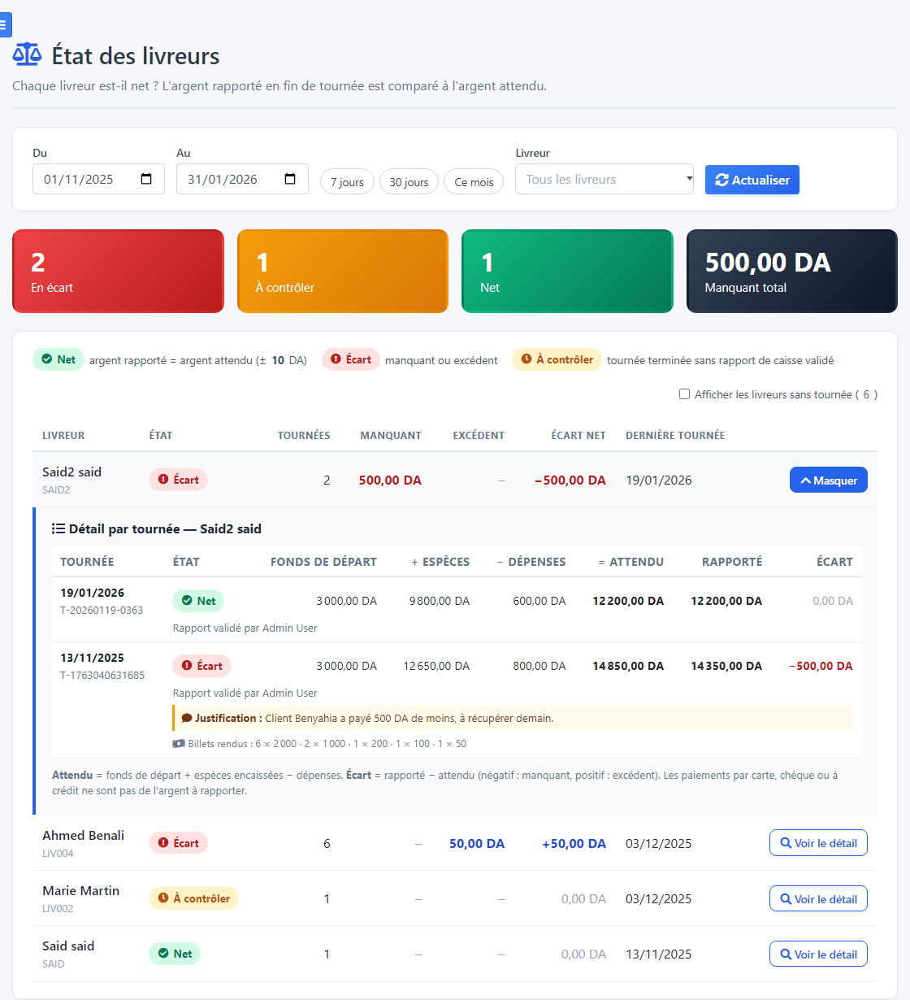
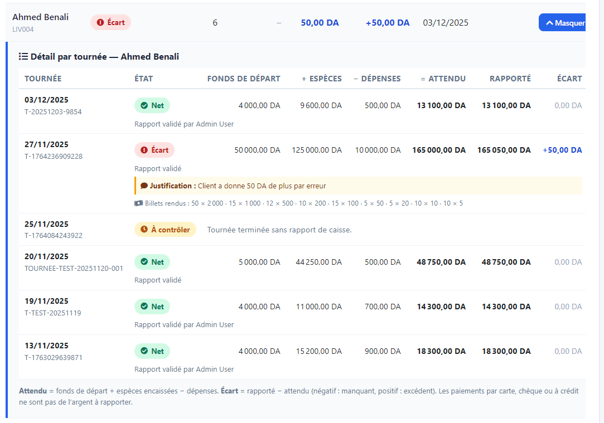
- Seules les tournées terminées ou clôturées comptent. Une tournée en cours n'a pas encore de résultat.
- Les paiements par carte, chèque ou à crédit ne sont pas de l'argent à rapporter : ils ne créent pas d'écart.
- Un écart de 10 DA ou moins est toléré (arrondis, monnaie) : le livreur reste « Net ».
- Si un livreur a à la fois un écart et une tournée à contrôler, il apparaît en Écart : c'est le plus urgent.
Tableau des bénéfices protégé par code PIN
L'entrée porte un petit cadenas. Elle n'apparaît que pour les comptes dont le rôle dans l'entreprise est Administrateur.
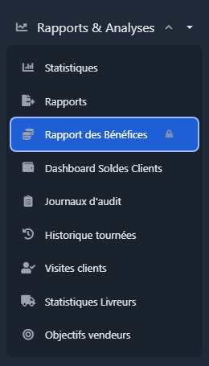
Les bénéfices sont une information sensible : seul l'administrateur de l'entreprise peut les voir, et il doit saisir un code PIN à chaque ouverture. Le PIN est commun à tous les administrateurs de l'entreprise.
Première ouverture : choisir le code PIN
- Le premier administrateur qui ouvre la page choisit le code : 4 à 8 chiffres, tapé deux fois.
- Cliquez sur Enregistrer le code PIN. Le tableau s'ouvre, et le code vaut désormais pour tous les administrateurs de l'entreprise. Communiquez-le-leur de vive voix.
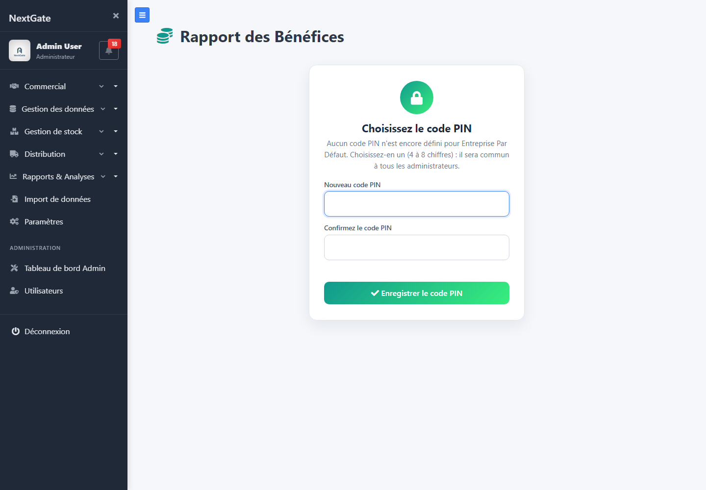
Ouvrir le tableau
- Tapez le code PIN, puis Déverrouiller.
- En cas d'erreur, le nombre d'essais restants s'affiche. Après 5 erreurs, l'accès est bloqué 15 minutes pour toute l'entreprise, même avec le bon code.
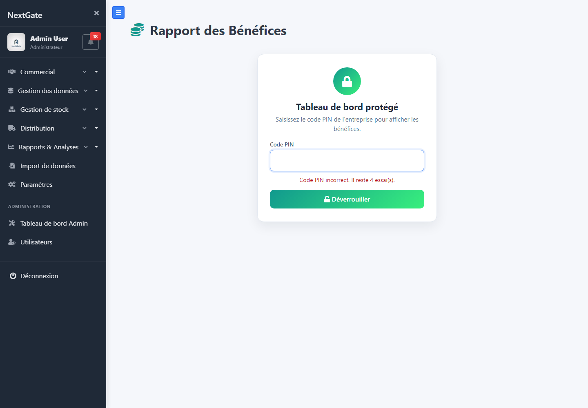
- Une fois le PIN accepté, l'accès reste ouvert 15 minutes sur cet ordinateur : vous pouvez changer de page et revenir sans retaper le code.
- Verrouiller referme le tableau tout de suite (à faire en quittant votre poste). Changer le code PIN demande l'ancien code, puis le nouveau deux fois.
- Les exports Excel et PDF ne fonctionnent que pendant que le tableau est ouvert.
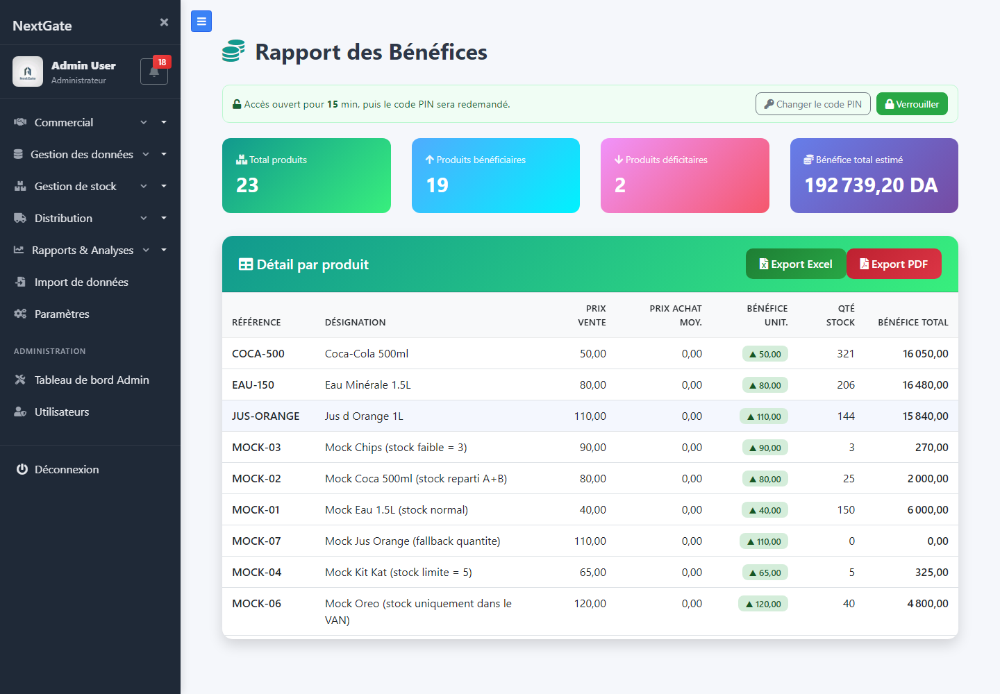
Pour les autres utilisateurs
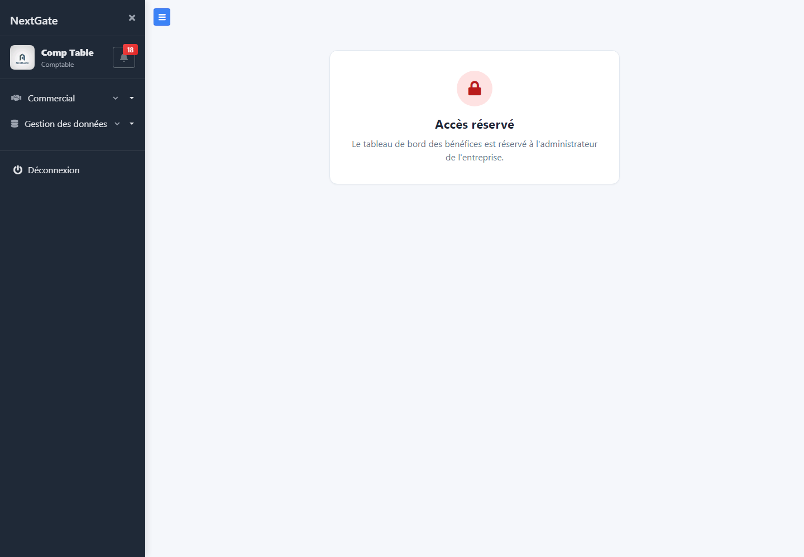
- Seul le rôle Administrateur de l'entreprise donne accès. Un compte « staff » sans ce rôle est refusé.
- Chaque administrateur ne voit que les bénéfices de son entreprise.
- Le code PIN est enregistré chiffré : personne, même un informaticien qui lit la base, ne peut le relire.
- Chaque ouverture, erreur de code et changement de code est noté dans Rapports & Analyses › Journaux d'audit.
Mise en service
rayannedistribution.com.
https://rayannedistribution.com/telecharger-app/ - Sur le serveur, appliquez les migrations.
python manage.py migrate(0075 et 0076) - Dans le navigateur, rechargez la page Tournées en forçant le cache : Ctrl + F5.
- Sur chaque téléphone de prévendeur et de livreur, ouvrez https://rayannedistribution.com/telecharger-app/, téléchargez l'APK et installez-le. Si Android le demande, autorisez l'installation depuis le navigateur (« sources inconnues »).
- Au premier lancement, vérifiez dans Paramètres de l'application que le serveur est
https://rayannedistribution.com, puis connectez-vous.